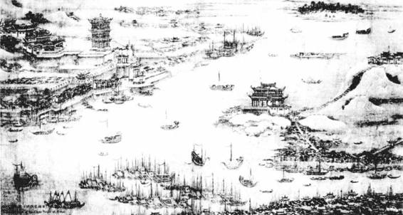
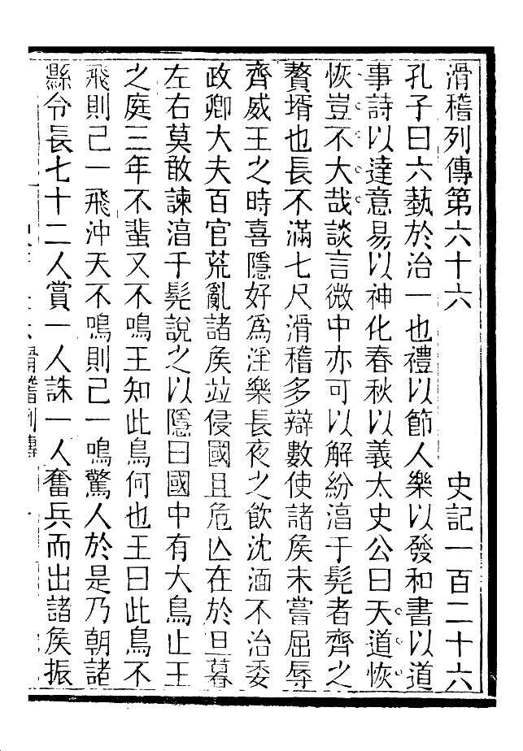

一切都太富于戏剧性：设若左良玉不是死在半途，设若清军南下行动稍迟而非恰好几乎与左军兵变同时，设若左侯虽死而黄得功、刘良佐并未挡住叛军东来……旬日之内，南京可有大变，而一个微如芥豆的小人物，将有可能成为改变历史的英雄。
这就是柳敬亭故事当时所以风魔天下的最终、最大的谜底。他在明清鼎革之际，被名公巨卿、才俊贤彦谈论不休，以至是活着的传奇，成为每个人争相一睹、倾心结纳的对象，根本是因他头上顶着这道奇特的光环。而当他顶着这光环载入历史后，他的一切——技艺、性格、言谈、经历，哪怕是脸上的麻子，都有了不同以往的意义，被渴求、猎奇、挖掘和放大。
王士禛亲聆他说书，给出“与市井之辈无异”的劣评。这令柳的拥趸忍无可忍，然而，人们大概没有注意，王士禛谈的主要不是好坏，是失望。在表示“与市井辈无异”之前，他有这样的交代：
左良玉自武昌称兵东下，破九江、安庆诸属邑，杀掠甚于流贼。东林诸公快其以讨马阮为名，而并讳其为贼。左幕下有柳敬亭、苏昆生者，一善说评话，一善度曲。良玉死，二人流寓江南。一二名卿遗老袒良玉者，赋诗张之，且为作传。[29]
很显然，他是在特殊心理准备下，得到了亲聆其说书的机会。这种等待或企盼，制造了太多的悬念，让王士禛对柳氏书艺的期待，保持在与他离奇的传说同样的高度。然而，现实降临，他发现高度突然消失，眼前这位说书家与素常所见没有本质区别（参考张岱记叙，事实或正如此）。于是，他深深失望了，并推其原因：柳氏神话，植根于士大夫的“左良玉情结”——一班“名卿遗老”，因心中对左氏事变的伫望想象、惋惜痛怅或不能释怀，而移情于曾亲历其事而此身独存的柳敬亭，借他为酒杯，浇自家块垒。王士禛称之为“爱及屋上之乌”；左良玉是“屋”，柳敬亭是那个“屋上之乌”。
有没有道理呢？我们来看两个事实。
第一，左良玉事件后，柳敬亭的价值以至职业，便是向人讲述他的左营见闻：“故至今及左，辄泫然白其心迹。”[30]“军中轶事语如新，磊落宁南百战身。”[31]“柳生冻饿王郎死，话到勾阑亦怆情。好把琵琶付盲妇，裹头弹说旧西京。”[32]“江南多少前朝事，说与人间不忍听。”[33]“飘零大树蔓寒烅，翁也追思一惘然。”[34]“逢人剧说故侯事，涕泗交颐声堕地。”[35]“乔姥于长堤卖茶，置大茶具……杜茶村尝谓人曰：‘吾于虹桥茶肆，与柳敬亭谈宁南故事，击节久之。’”[36]左良玉之为柳敬亭的不变谈资，与祥林嫂逢人便说儿子阿毛显然不同。在柳敬亭，这不断重复的诉说，与其说出于挥之不去的记忆，不如说构成了存身立命的资本，凭借乎此，他不仅作为一种稀缺资源而被永远需求着，最后本人也变成那传奇的一部分。

武昌城
柳敬亭传奇在南京萌芽，而成就于武昌，他在这里被左良玉揽为座上客。用王士禛的话说，士大夫爱屋及乌，因“左良玉情结”而追捧柳敬亭。

《史记•滑稽列传》
司马迁最早记载了语言表演者事迹，且将他们定位为智者，以“谈言微中，亦可以解纷”看待其意义和作用，对后来文人深有影响。
第二，在柳敬亭周围，先后曾有两拨士夫文人。头一拨，是前明时候，在南京秦淮的旧相识；第二拨，是入清以后结交的新朋友。其典型代表，前如冒辟疆，后如龚鼎孳。而柳敬亭与这两拨士夫文人朋友的关系，各有特点。先前在秦淮河，他与冒辟疆等，一道经历放浪与纵谑，可以美其名曰“个性解放”，亦不妨呼之“酒肉朋友”，是不拘行迹的表达，是慨以当歌的豪莽。而在第二拨朋友当中，不知不觉，柳敬亭失去了那种生气、野气、草莽气，被包围、膜拜和偶像化，成为凭吊的对象，及破碎心灵的遮遮掩掩的寄托。在这复杂情怀的后面，有龚鼎孳、阎尔梅那样的“过来人”，也有王士禛等对前朝并无多少经历然而仍在情感或心理上有种种好奇、萦想的人。总之入清以后，柳敬亭因为那关键时刻的关键事件，成为独一无二的存在。龚鼎孳如下一番话，把大家曲折的心态都道了出来：
敬亭吾老友……丁亥（1647）春冬，相从于桃叶、金阊间，酒酣耳热，掀髯抵掌，英气勃勃，恒如在宁南幕府上座时。[37]
“恒如在宁南幕府上座时”，见柳敬亭、与之一席谈，自己好像亲置左侯帐中一般——龚鼎孳如此，他人岂有例外？龚不远千里，迎他来京，盛情款待，固可视为交厚谊深，但又岂知没有奇货可居的因素？“龚鼎孳集同人听柳敬亭说隋唐遗事”[38]，真的是“隋唐遗事”或只有“隋唐遗事”么？有没有别的“遗事”呢？
最终，柳敬亭的传奇，非得放到明末清初的大背景和时代心理下解释，才落到实处。而当代的传记作者，却根据某些“义理”，给予这样的解读：“民间的艺术，是广大人民所热爱的东西，所以能够永久的流传不衰。因为它包含着人民的思想感情和人民的斗争生活，是大多数人民心情的寄托……他以丰富真切动人的语言，通过细致而深刻的艺术手腕，描出鲜明的形象——封建社会的帝王将相、地主豪绅以及具有人民性的英雄豪杰。他把历史和传奇人物描摹得那样惟妙惟肖，把封建社会丑恶的面貌揭露得不留余地……”[39]直至眼下，中学课文对黄传的删改，仍旧秉持同样的精神。这样做，是为迎合根据“义理”重塑历史的需要，并丰富其“材料”。然而，柳敬亭这个人、这件事原来怎么回事，就全然失其本相了。